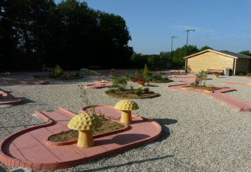

Description consigne et tarif Pedalo
Dany reno vous invite sur un tour de pedalo dernier cri avec le tout dernier moteur j'appuis !
pour 5 euro suplémentaire il fait meme le gondolier a l'avant !
Le Pedalo aussi dit bateau a pedalier vous permettera de faire une promenade sur l'etang !
Tarif : 5€ LE Pedalo pour une durée de 20mn !
Le dit bateau pouvant acceuillir jusqu'a 4-5 personnes.
Consigne du Pedalo :
Rester dans la zone navigable
Ne pas provoquer de collision
Ne pas s'arroser
Gilet de sauvetage OBLIGATOIRE en dessous de 12 ans
(gilet disponible pour tout ages si désirés)
Enfant de moins de 14 non-accompagné interdit
-------------- Mini Golf --------------

Description consigne et tarif Mini Golf Dany raieno est disponible pour souffler sur la balle si elle est proche du trou !
Mini Golf de 18 trou de la mare de L'Essay
Matériel a récupéré a la buvette (face a l'etang)